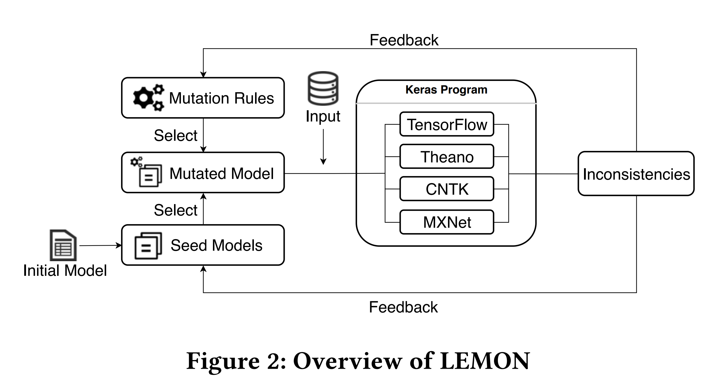

Deep Learning Library Testing via Effective Model Generation.
Introduction

LEMON is a novel approach to testing DL libraries by generating effective DL models via guided mutation. The goal is to test DL libraries as sufficiently as possible by exploring unused library code or different usage ways of library code. We further propose a heuristic strategy in LEMON to guide the process of model generation so as to generate models that can amplify the inconsistent degrees for real bugs. In this way, it is clearer to distinguish real bugs and uncertain impacts in DL libraries.
We conducted an empirical study to evaluate the effectiveness of LEMON based on 20 release versions of TensorFlow,Theano, CNTK, and MXNet. LEMON detected 24 new bugs in the latest release versions of these libraries. The results also demonstrate that the models generated by LEMON outperform existing models and the models generated without guidance in terms of the number of unique bugs/inconsistencies and the achieved inconsistent degrees.